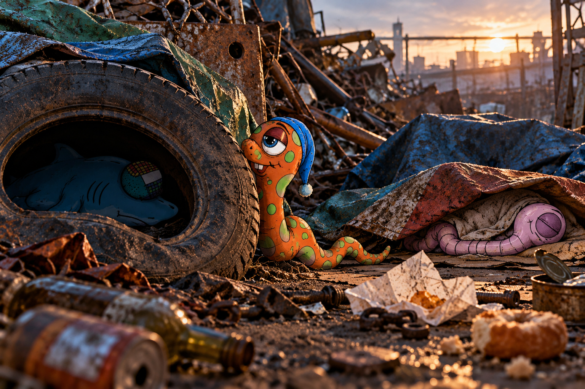

THE MORNING AFTER

He woke up in a scrapyard. He doesn't know where he is or what happened last night. He's taking it remarkably well.
VIEW NEXTWORMS ON ACID · NINE-SLICE TEST
Prototype only. The new pinned parchment is used as a nine-slice background: corners stay intact while edges and centre adapt to the card.

He woke up in a scrapyard. He doesn't know where he is or what happened last night. He's taking it remarkably well.
VIEW NEXTThese classes are available for reusable cards:
story-card--square
story-card--tilt-left
story-card--tilt-right
Prototype only · Live website unchanged